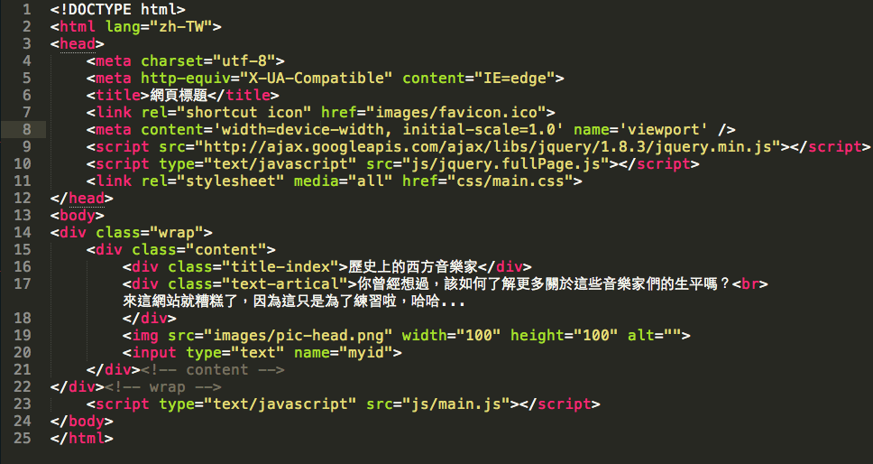
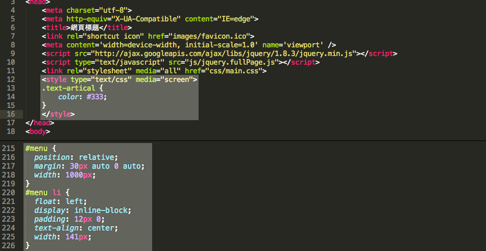
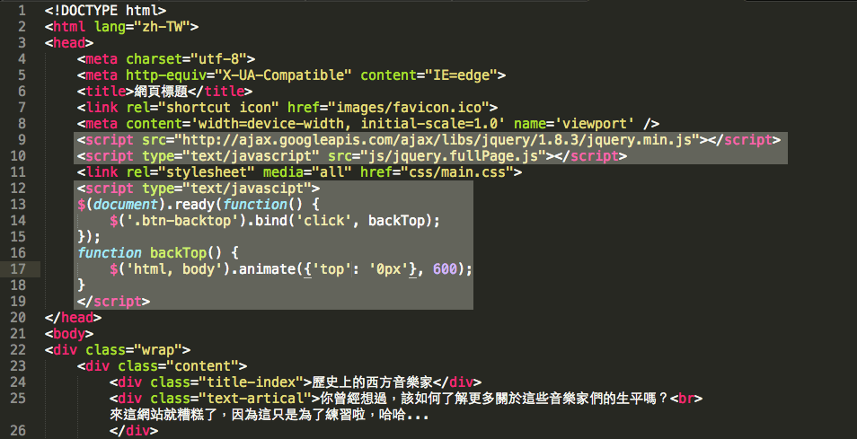

切版教學
逐步切版完成一個單頁式網站
介紹前端基本架構
html , css , javascript（使用套件）
html , css , javascript ?
比喻就像蓋房子
Html
Css
Javascript
架構
樣式外觀
功能
這次切版網頁外觀
Html基本樣貌
用來宣告html版本

包住所有內容、指定語系
內容為網頁表頭
編碼類型
使用瀏覽器最新版本（例：避免ie相容模式）
網頁標題
網頁標頭前面的圖標icon
讓其他裝置都能顯示更好
外部連結Javascript

外部連結Css

網頁呈現內容
多數標籤都用 < / > 結束
只有br、img、input不用
< !-- 這是註解 -- >
Css基本樣貌
在html本頁（上）、css外部連結檔內（下）
css結構
Css又分為id跟class
- id在同文件內只能使用一次、class能重複使用
- id權重比class高，給予相同屬性不同屬性質時，顯示id的
- 同份文件內class或id給予相同屬性不同屬性質時，顯示最下方的
Css能控制的項目
- 自訂選擇器：.icon { margin: 50px; }
- html內的元素：h1, h2, header, nav, footer...
input [type="text"] { ... }
css使用注意事項
- 不要使用html原有的元素為選擇器命名，避免混淆
- 不要直接以名稱為選擇器命名，使用語意化、形容詞之類較靈活 例：紅色警示文字
- 對於css來說命名大小寫不同的選擇器，是不同的兩個
- css在html內連套用兩個樣式時可以寫：
< div class="icons" id="home">
or
< div class="icons home">
Css偽類（Pseudo-element）
- :hover :active... 這都是超連結樣式
- :before :after 這是給元素前後定樣式
- :first-child :last-child
這是給一列元素的第一個、最後一個定樣式
Javascript基本樣貌
Javascript外部連結
Javascript寫在本頁
由於網頁是由上往下讀取的，
因此javascript給予動態需要網頁先找到目標才能運行，
避免時常找不到的問題，js往往寫在< /body>內
進行切版前
可以先知道一些事...
切版前檢視畫面有哪些元素（背景是否連續？飄浮元素？）
切版方向由上至下、左至右
盡量使用 html 語意化標籤
能幫助網路seo搜尋
例：header、section、nav、h1、h2、footer
切版用到的css Box Model概念
小圖盡量存PNG、大圖存JPG
- 存png壓縮後資料較不失真，比jpg檔還清晰
- 相對於大底圖存png檔案會很大，因此存jpg
- 壓縮jpg：http://www.jpegmini.com/
壓縮png：https://tinypng.com/
可以有格線可對齊
安裝擴充套件
Chrome：Grid System Firefox：GridFox
瀏覽器預設值會影響css，使用reset讓預設值統一歸零
休息10分鐘後開始切版
沒有Ps軟體無所謂，可直接用images資料夾
讓form表有真正功能
使用google doc表單